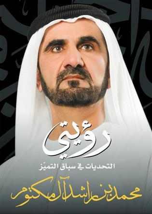

 The book of His Highness Sheikh Mohammed bin Rashid, Vice President of the United Arab Emirates Prime Minister and Ruler of Dubai, "My vision .. Challenges in the Race for Excellence", presents the vision of His Highness in the experience of development, which is based on excellence and moves Dubai from their role as a regional economic, to play a vital role in the center of a global economic development. He focuses on the sectors of professional services, tourism and economy of thought and knowledge, and creative human energy.
The Book consists of 223 pages of medium size, which includes two sets of photographs, which joins the content of the book, to tell the whole story development of excellence in Dubai. Include two groups relate to the book public images, and other related personal writer, readers will see some of them published for the first time.
Book Parts
The book is divided into five parts as shown below: